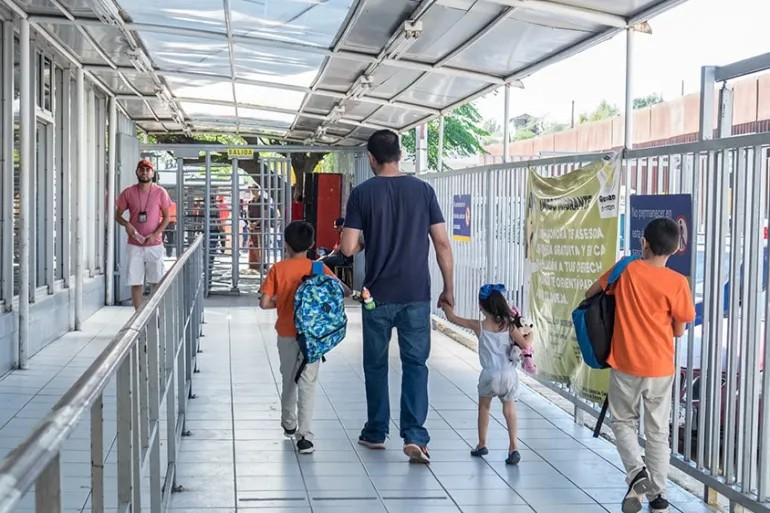
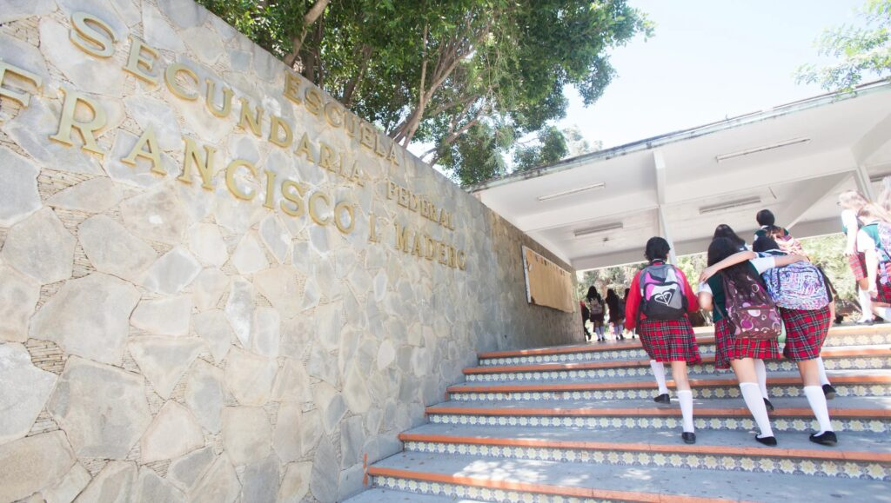
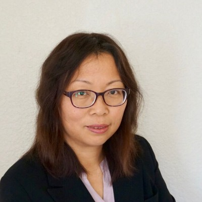

Frontera Rising —- ——–边境青少年研究项目 / Proyecto de Jóvenes Fronterizos 🌟
你的声音很重要。你的故事可以帮助建设一个更强大的社区。Tu voz importa. Tu historia puede ayudar a construir una comunidad más fuerte.

| 中文 |
|---|
| 👥 我们在寻找谁 • 在墨西哥长大的美国出生青少年 • 与边境加工厂（maquiladora）行业相关的家庭 🏭 什么是 maquiladora 行业？指边境附近工厂里的工作，为美国和其他国家制造或组装产品。例如：电子产品、汽车零部件、服装、医疗器械 |
| 📚 我们研究什么 我们想了解年轻人如何：• 在返回美国后适应学校、友谊和社区生活 • 应对由跨境生活、家庭工作和政策带来的挑战与机遇 |
| 💬 为什么参与？ • 分享你的故事，让你的声音被听见 • 彰显边境青少年的坚韧与力量 • 为本地项目和领导者提供参考，更好地支持家庭 |
| 👐 如何参与 • 以家庭参与者身份加入 • 分享你的反馈和经历 • 帮助我们与你所在社区的其他人建立联系 |

| Español |
|---|
| 👥 A Quién Buscamos • Adolescentes nacidos en EE.UU. que crecieron en México • Familias vinculadas al sector maquilador 🏭 ¿Qué significa “sector maquilador”? Trabajos en fábricas cerca de la frontera que fabrican o ensamblan productos para EE.UU. y otros países. Ejemplos: electrónicos, autopartes, ropa, dispositivos médicos |
| 📚 Lo Que Estudiamos Queremos aprender cómo los jóvenes: • Se adaptan a la escuela, amistades y vida comunitaria al regresar a EE.UU. • Enfrentan retos y oportunidades influenciados por la vida fronteriza, el trabajo familiar y las políticas |
| 💬 ¿Por Qué Participar? • Ayuda a que tu historia y tu voz sean escuchadas • Resaltar la fortaleza y resiliencia de los jóvenes fronterizos • Informar a programas y líderes locales para apoyar mejor a las familias |
| 👐 Cómo Participar • Únete como familia participante • Comparte tus opiniones y experiencias • Ayúdanos a conectar con otras familias en tu comunidad |
📢 行动号召 👉 有兴趣参与或想了解更多？ 📞 📧 info@escedu.org 📢 Llamado a la Acción 👉 ¿Interesado en participar o aprender más? 📧 info@escedu.org
✨ 让我们一起颂扬并支持边境青少年的声音。
✨ Juntos podemos celebrar y apoyar las voces de los jóvenes fronterizos.
项目合作伙伴：加州大学河滨分校 Wang, Qingfang 教授（Dr. Wang）

我们俱乐部的贡献
ESC Club 期待通过以下方式支持 Wang 教授的项目：
- 招募参与者，借助我们的跨境青少年网络。
- 社区引荐，促进与家庭、学校和青少年领袖的真诚互动。
- 文化背景与参与支持，帮助确保研究扎根于本地的真实生活经历。
致合作伙伴的邀请
我们相信，这项研究在指导政策与实践方面具有巨大潜力，有助于增强边境青少年的教育机会、社会流动性和福祉。
我们邀请贵组织与我们一起支持 Wang 教授——无论是通过合作、外展协助还是资源捐助——以扩大研究的影响力，促进跨国青少年的公平发展。
感谢您的考虑。如需进一步交流，请联系 info@escedu.org